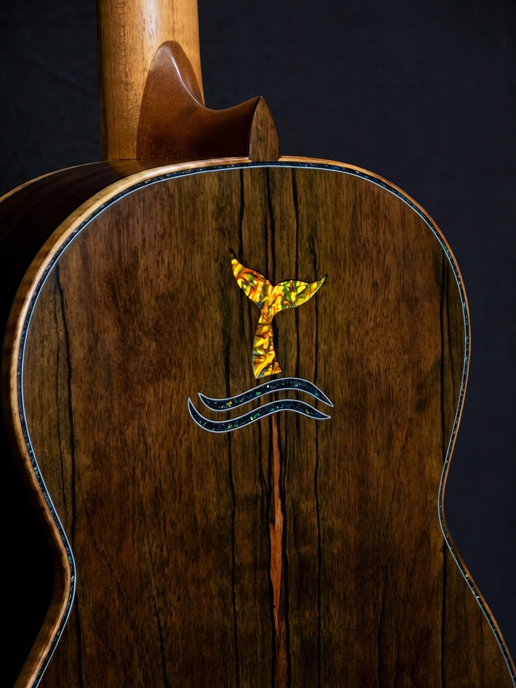
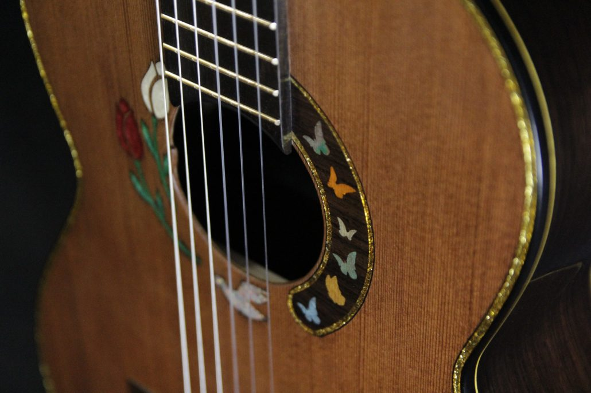
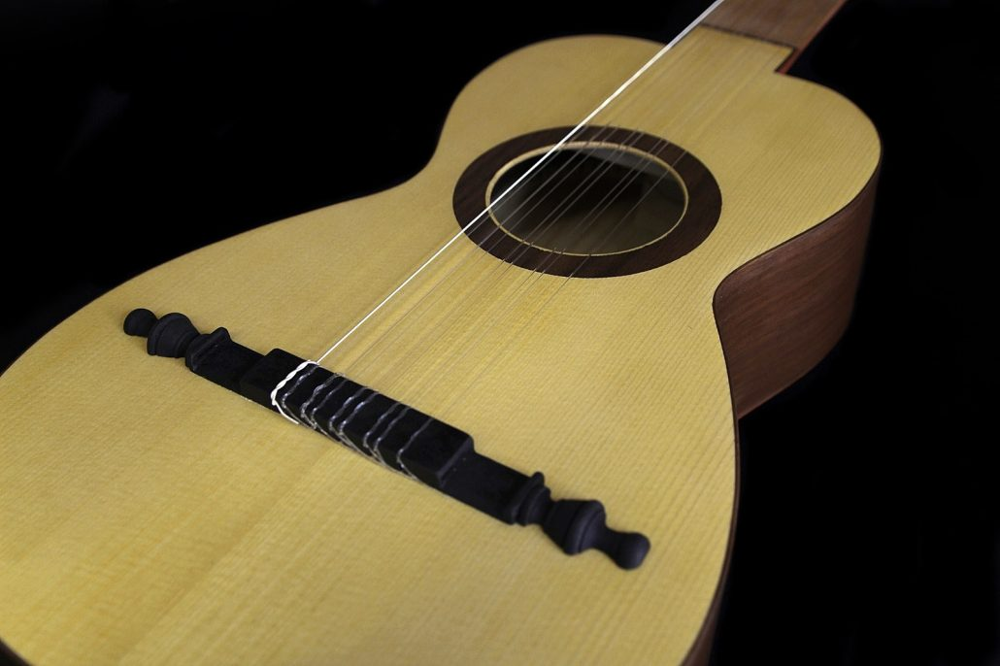
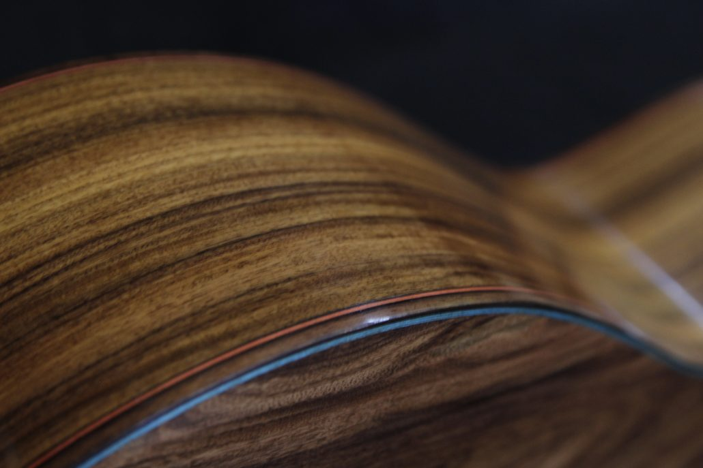
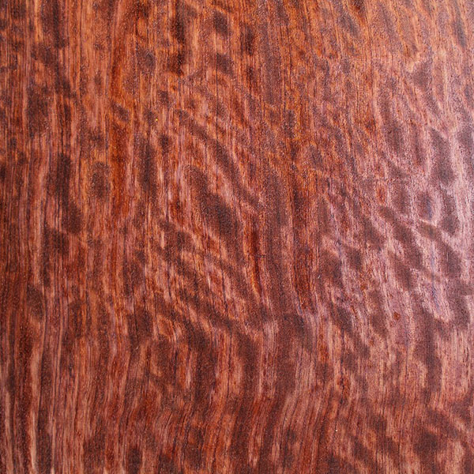
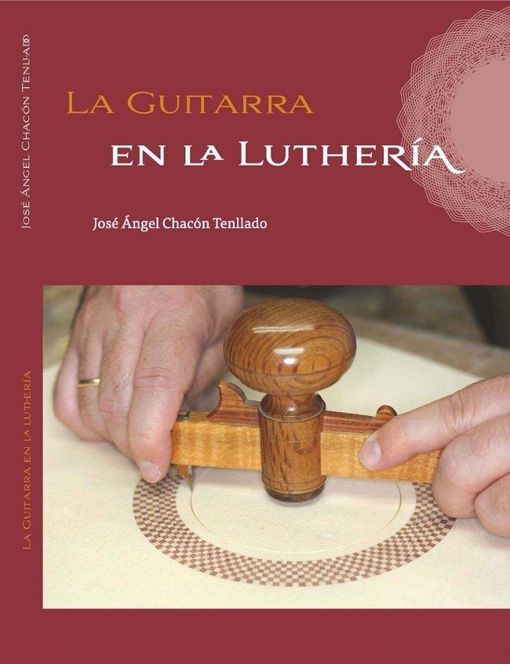
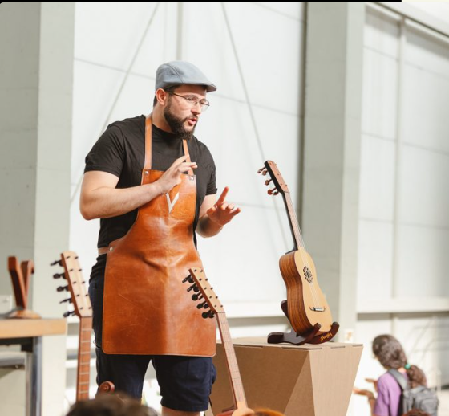

Catálogo del taller
Instrumentos, maderas
y conocimiento.
Todo lo que sale del taller se construye, selecciona o comparte con el mismo criterio: hacer las cosas bien y explicarlas con claridad. Los instrumentos se realizan por encargo.
Catálogo
Piezas disponibles
y por encargo.
Los precios son orientativos y pueden variar según maderas, acabados y configuración. Cada proyecto se presupuesta de forma individual antes de iniciar el trabajo.

Guitarras de autor
Golden Whale
Cedro canadiense · Koa hawaiana · pan de oro. Proyección armónica colosal.
Desde 6.200 €Por encargo
Ver ficha





Instrumentos de folclore
Guitarro murciano
Construcción artesanal · bajo encargo. Un instrumento ligado a la tradición murciana.
Desde 1.800 €Por encargo
Ver ficha

Instrumentos de folclore
Guitarro tenor
Música popular · configuración a medida. Pensado para conjuntos y repertorio tradicional.
Desde 1.600 €Por encargo
Ver ficha

Maderas
Lámina de Bubinga
Pommele figurada · estacionada en el taller. Pieza seleccionada para luthería.
Desde 180 €Disponible
Ver ficha

Libros y formación
La guitarra en la luthería
Libro de referencia · tapa dura. Lectura esencial para luthiers y aficionados.
39 €Disponible
Ver ficha

Mentoría
Mentoría 1:1
Una hora de consultoría con el luthier. Pack de 10 sesiones: 400 €.
45 € / sesiónDisponible
Ver ficha
Cómo funciona
Del interés al instrumento.
01
Escríbeme
Cuéntame qué pieza te interesa, para qué la vas a usar y cualquier preferencia que tengas en mente.
02
Concretamos
Revisamos características, maderas, acabados, presupuesto y plazo. Te explico todo antes de decidir.
03
Se construye
El proyecto entra en la planificación del taller. Te mantengo informado del avance hasta la entrega.
01 — 6 piezas
Guitarras de autor
Seis instrumentos únicos, construidos a mano.
Explorar
02 — 7 modelos
Instrumentos de folclore
Guitarros, laúdes, bandurrias y guitarra mayor.
Explorar
03 — Reserva
Maderas
Piezas seleccionadas y estacionadas en el taller.
Ver disponibles
04 — Servicios
Herramientas y taller
Ajustes, mantenimiento y trabajos de luthería.
Consultar
05 — Formación
Libros y artículos
Lecturas y recursos para luthiers y aficionados.
Leer
06 — 1:1
Mentoría
Sesiones de consultoría sobre luthería y oficio.
Reservar

Hablemos de tu proyecto
¿No encuentras tu pieza?
El catálogo es una selección, no un límite. Si buscas una madera concreta, una variante de instrumento o un proyecto especial, hablemos y estudiamos las posibilidades.